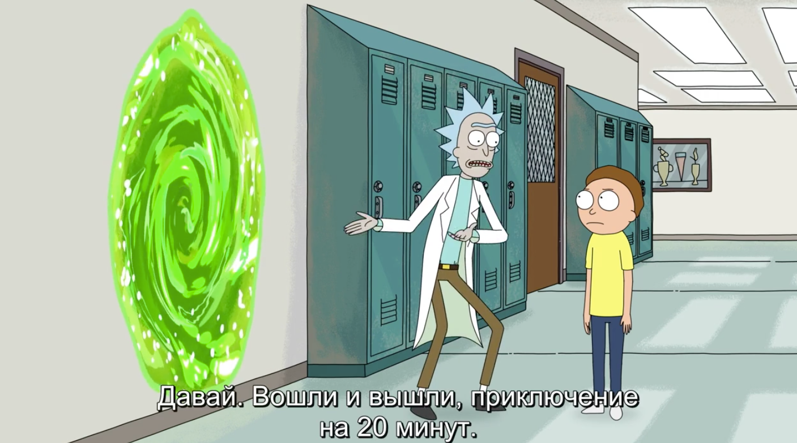

Изи тест айсикью ловушка. Нельзя гуглить или повторно проходить тест! Но можно спрашивать у друзей и знакомых! В общем там 8 вопросов и в целом это не сложно, ты справишься! После прохождения теста нужно произнести в моем присутствии заклинание "А ГДЕ?"
